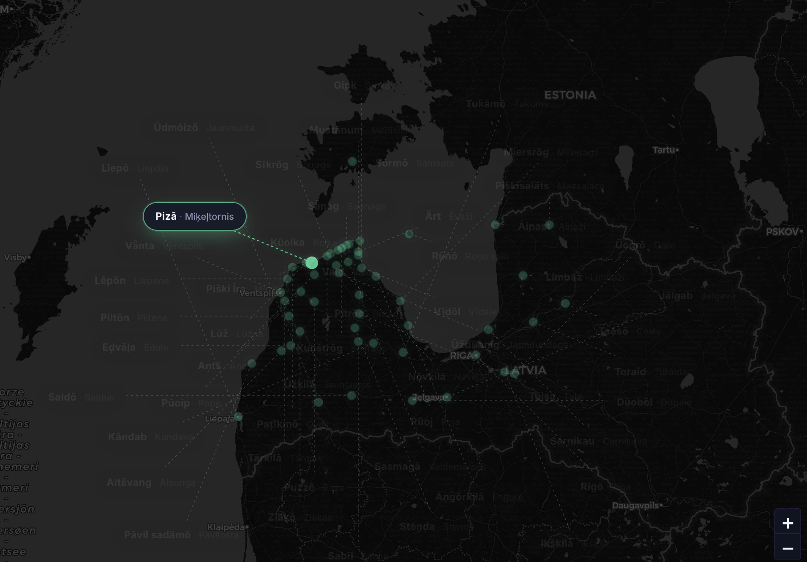

01 / 02 Play the game ↗Language data · Interactive map
Livonian Place Names
Match place names in Livonian and Latvian, reveal them on the map and explore the place-name heritage of the Livonians, Latvia’s Indigenous people.
Developed with University of Latvia Livonian Institute
livonian.lv ↗